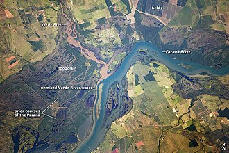
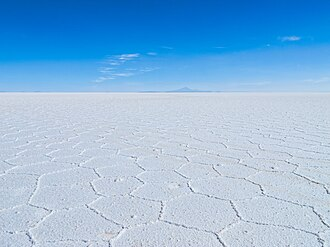
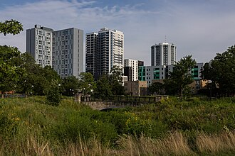
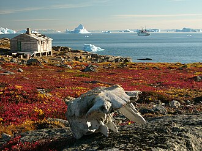
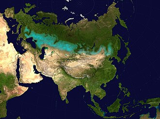
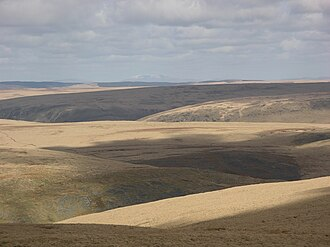

01 · 山脉、峡谷与陆地地貌 (Mountains, Valleys & Landforms)
| 单词 (英 / 法性数完整形态) | 音标 (英 / 法 IPA) | 中文释义 | 英文定义 (WordNet) | 词频 | 实物配图 |
|---|---|---|---|---|---|
| pitle creuxn.m.🇬🇧 pit | /pit//kʁø/ | n. 深坑, 矿井, 果核, 地窖, 深渊, 绝境, 陷阱 | a sizeable hole (usually in the ground) | 4.27 |  |
| upgradela côten.f.🇬🇧 upgrade | /'ʌpgreid//kot/ | n. 上坡, 升级, 上升 | an upward slope or grade (as in a road) | 4.24 |  |
| climb兼类词la côten.f.🇬🇧 climb | /klaim//kot/ | n. 攀登, 爬升 | an upward slope or grade (as in a road) | 4.22 |  |
| cavela cavernen.f.🇬🇧 cave | /keiv//kavɛʁn/ | n. 洞, 穴 | a geological formation consisting of an underground enclosure with access from the surface of the ground or from the sea | 4.2 |  |
| ridgela crêten.f.🇬🇧 ridge | /ridʒ//kʁɛt/ | n. 脊, 山脊, 山脉 | a long narrow natural elevation or striation | 4.12 |  |
| cliffl'escarpementn.m.🇬🇧 cliff | /klif//ɛskaʁpəmɑ̃/ | n. 悬崖, 绝壁 | a steep high face of rock | 4.1 |  |
| steeple steepn.m.🇬🇧 steep | /sti:p//steep/ | n. 浸渍, 悬崖 | a steep place (as on a hill) | 3.99 |  |
| dalela comben.f.🇬🇧 dale | /deil//kɔ̃b/ | n. 小谷, 溪谷 | an open river valley (in a hilly area) | 3.98 |  |
| canyonle canyonn.m.🇬🇧 canyon | /'kænjәn//kaɲɔn/ | n. 峡谷, 海底悬崖 | a ravine formed by a river in an area with little rainfall | 3.96 |  |
| slopela côten.f.🇬🇧 slope | /slәup//kot/ | n. 倾斜, 斜坡, 斜率, 扛枪姿势 | an elevated geological formation | 3.9 |  |
| glenle glenn.m.🇬🇧 glen | /glen//ɡlɑ̃/ | n. 峡谷, 幽谷 | a narrow secluded valley (in the mountains) | 3.87 |  |
| reefle récifn.m.🇬🇧 reef | /ri:f//ʁesif/ | n. 暗礁, 礁, 缩帆 | a submerged ridge of rock or coral near the surface of the water | 3.83 |  |
| twilight zone复合词la régionn.f.🇬🇧 twilight zone | /ˈtwailait zəun//ʁeʒjɔ̃/ | n. 城市贫穷地区 | the lowest level of the ocean to which light can reach | 3.77 |  |
| continental shelf复合词le plateau continentaln.m.🇬🇧 continental shelf | /.kɒnti'nentl ʃelf//plato kɔ̃tinɑ̃tal/ | [经] 大陆架 | the relatively shallow (up to 200 meters) seabed surrounding a continent | 3.72 |  |
| highlandle hautes terresn.m.🇬🇧 highland | /'hailәnd//ʼot tɛʁ/ | n. 高地, 苏格兰高地 | elevated (e.g., mountainous) land | 3.7 |  |
| ski slope复合词le ski alpinn.m.🇬🇧 ski slope | /ski: sləup//ski alpɛ̃/ | n. [体]滑雪斜坡 | a snow-covered slope for skiing | 3.7 |  |
| dellla dinglen.f.🇬🇧 dell | /del//dɛ̃ɡl/ | n. 小谷, 小溪谷 | a small wooded hollow | 3.67 |  |
| riversidela bergen.f.🇬🇧 riverside | /'rivәsaid//bɛʁʒ/ | n. 河边, 河畔 | the bank of a river | 3.67 |  |
| barrier reef复合词le récif corallienn.m.🇬🇧 barrier reef | /ˈbæriə ri:f//ʁesif kɔʁaljɛ̃/ | n. 堤礁（珊瑚礁的一种）; 堡礁 | a long coral reef near and parallel to the shore | 3.66 |  |
| continental slope复合词la marge continentalen.f.🇬🇧 continental slope | /.kɒnti'nentl slәup//maʁʒ kɔ̃tinɑ̃tal/ | [经] 大陆架坡 | the steep descent of the seabed from the continental shelf to the abyssal zone | 3.66 |  |
| valele valn.m.pl. vaux🇬🇧 vale | /veil//val/ | n. 谷, 溪谷, 告别 | a long depression in the surface of the land that usually contains a river | 3.62 |  |
| cavityle creuxn.m.🇬🇧 cavity | /'kæviti//kʁø/ | n. 洞, 空穴, 腔 | a sizeable hole (usually in the ground) | 3.61 |  |
| plateaula plainen.f.🇬🇧 plateau | /plæ'tәu//plɛn/ | n. 高地, 高原, (上升后的)稳定水平 | a relatively flat highland | 3.61 |  |
| rift valley复合词la vallée de riftn.f.🇬🇧 rift valley | /rift 'væli//vale də ʁift/ | 裂谷 | a valley with steep sides; formed by a rift in the earth's crust | 3.61 |  |
| bluffle bluffn.m.🇬🇧 bluff | /blʌf//blœf/ | n. 断崖, 绝壁, 吓唬 | a high steep bank (usually formed by river erosion) | 3.58 |  |
| tidal basin复合词le tidal basinn.m.🇬🇧 tidal basin | /ˈtaɪdl ˈbeisn//tidal basɛ̃/ | 潮汐港湾 | a basin that is full of water at high tide | 3.55 |  |
| coral reef复合词le récif corallienn.m.🇬🇧 coral reef | /ˈkɔrəl ri:f//ʁesif kɔʁaljɛ̃/ | n. 珊瑚礁 | a reef consisting of coral consolidated into limestone | 3.54 |  |
| tar pit复合词la fosse à bitumen.f.🇬🇧 tar pit | /tɑ: pit//fos a bitym/ | 沥青坑 | a natural accumulation of bitumens at the surface of the earth; often acts as a trap for animals whose bones are thus preserved | 3.54 |  |
| kettle hole复合词la bouilloiren.f.🇬🇧 kettle hole | /ˈketl həul//bujwaʁ/ | 锅形陷洞，锅穴，壶穴 | (geology) a hollow (typically filled by a lake) that results from the melting of a mass of ice trapped in glacial deposits | 3.51 |  |
| mesale mesan.m.🇬🇧 mesa | /'meisә//meza/ | n. 台面, 岩滩, 平顶山 | flat tableland with steep edges | 3.5 |  |
| troughl'abreuvoirn.m.🇬🇧 trough | /trɒ:f//abʁœvwaʁ/ | n. 槽, 水槽, 饲料槽 | a narrow depression (as in the earth or between ocean waves or in the ocean bed) | 3.43 |  |
| ascentla côten.f.🇬🇧 ascent | /ә'sent//kot/ | n. 上升, 提高, 攀登, 上坡路 | an upward slope or grade (as in a road) | 3.42 |  |
| ledgela tabletten.f.🇬🇧 ledge | /ledʒ//tablɛt/ | n. 突出部分, 暗礁, 矿层 | a projecting ridge on a mountain or submerged under water | 3.41 |  |
| gorgela gorgen.f.🇬🇧 gorge | /gɒ:dʒ//gɔʁʒ/ | n. 峡谷, 凹槽, 塞饱, 咽喉 | a deep ravine (usually with a river running through it) | 3.4 |  |
| ripple mark复合词la ride de courantn.f.🇬🇧 ripple mark | /'ripl mɑ:k//ʁid də kuʁɑ̃/ | 波痕 | one of a series of small ridges produced in sand by water currents or by wind | 3.4 |  |
| hillsidela côten.f.🇬🇧 hillside | /'hilsaid//kot/ | n. 山坡, 山腹 | the side or slope of a hill | 3.38 |  |
| landfillla déchargen.f.🇬🇧 landfill | /'lændfil//deʃaʁʒ/ | n. 垃圾堆；垃圾填埋地 | a low area that has been filled in | 3.35 |  |
| lunar crater复合词la cratère lunairen.f.🇬🇧 lunar crater | /ˈlju:nə ˈkreitə//kʁatɛʁ lynɛʁ/ | （月面）环形山; 月坑 | a crater on the Earth's Moon | 3.34 |  |
| sand dune复合词la dunen.f.🇬🇧 sand dune | /sænd dju:n//dyn/ | n. 沙丘, 风吹积成的沙丘 | a ridge of sand created by the wind; found in deserts or near lakes and oceans | 3.33 |  |
| dunela dunen.f.🇬🇧 dune | /dju:n//dyn/ | n. 沙丘 | a ridge of sand created by the wind; found in deserts or near lakes and oceans | 3.28 |  |
| borrow pit复合词le banc d'empruntn.m.🇬🇧 borrow pit | /ˈbɔrəu pit//bɑ̃ dɑ̃pʁœ̃/ | 取土坑 | a pit created to provide earth that can be used as fill at another site | 3.2 |  |
| creek bed复合词le litn.m.🇬🇧 creek bed | /kri:k bed//li/ | 河床；溪床 | a channel occupied (or formerly occupied) by a stream | 3.2 |  |
| dry wash复合词le lavern.m.🇬🇧 dry wash | /drai wɔʃ//lave/ | 干河床 | the dry bed of an intermittent stream (as at the bottom of a canyon) | 3.2 |  |
| fire pit复合词le creuxn.m.🇬🇧 fire pit | /'faiә pit//kʁø/ | 火山坑；熔岩穴 | a pit whose floor is incandescent lava | 3.2 |  |
| flood plain复合词le lit majeurn.m.🇬🇧 flood plain | /flʌd plein//li maʒœʁ/ | 河漫滩; 河滩; 洪泛地; 洪泛平原 | a low plain adjacent to a river that is formed chiefly of river sediment and is subject to flooding | 3.2 |  |
| lake bed复合词le litn.m.🇬🇧 lake bed | /leik bed//li/ | [机] 湖泊沉积矿 | the bottom of a lake | 3.2 |  |
| lake bottom复合词le basn.m.🇬🇧 lake bottom | /leik ˈbɔtəm//ba/ | [医]湖底 | the bottom of a lake | 3.2 |  |
| natural depression复合词la dépressionn.f.🇬🇧 natural depression | /'nætʃәrәl di'preʃәn//depʁesjɔ̃/ | un. 天然凹陷 | a sunken or depressed geological formation | 3.2 |  |
| rabbit hole复合词le terrier de lapinn.m.🇬🇧 rabbit hole | /'ræbit hәul//tɛʁje də lapɛ̃/ | 兔子洞 | a hole in the ground as a nest made by wild rabbits | 3.2 |  |
| river bottom复合词le basn.m.🇬🇧 river bottom | /ˈrivə ˈbɔtəm//ba/ | 河底 | a channel occupied (or formerly occupied) by a river | 3.2 |  |
| salt flat复合词le désert de seln.m.🇬🇧 salt flat | /sɔ:lt flæt//dezɛʁ də sɛl/ | 盐滩 | a flat expanse of salt left by the evaporation of a body of salt water | 3.2 |  |
| sand bar复合词la platuren.f.🇬🇧 sand bar | /sænd bɑ://platyʁ/ | 沙洲 | a bar of sand | 3.2 |  |
| swallow hole复合词l'avenn.m.🇬🇧 swallow hole | /ˈswɔləu həul//avɛn/ | 石灰坑 | a depression in the ground communicating with a subterranean passage (especially in limestone) and formed by solution or by collapse of a cavern roof | 3.2 |  |
| inclinela côten.f.🇬🇧 incline | /in'klain//kot/ | n. 倾斜, 斜坡, 斜面 | an elevated geological formation | 3.15 |  |
| ravinel'abimen.f.🇬🇧 ravine | /rә'vi:n//abim/ | n. 峡谷, 冲沟, 溪谷 | a deep narrow steep-sided valley (especially one formed by running water) | 3.15 |  |
| hammockla butten.f.🇬🇧 hammock | /'hæmәk//byt/ | n. 吊床 | a small natural hill | 3.14 |  |
| gullyla ravinen.f.🇬🇧 gully | /'gʌli//ʁavin/ | n. 小峡谷, 排水沟 | deep ditch cut by running water (especially after a prolonged downpour) | 3.11 |  |
| burrowl'antren.f.🇬🇧 burrow | /'bʌrәu//ɑ̃tʁ/ | n. 洞穴, 藏身处 | a hole made by an animal, usually for shelter | 3.1 |  |
| buttela butten.f.🇬🇧 butte | /bju:t//byt/ | n. 孤峰 | a hill that rises abruptly from the surrounding region; has a flat top and sloping sides | 3.09 |  |
| champaignle champn.m.🇬🇧 champaign | /'tʃæmpein//ʃɑ̃/ | n. 原野, 平原 | extensive tract of level open land | 3.08 |  |
| tundrale toundran.m.🇬🇧 tundra | /'tʌndrә//tundʁa/ | n. 苔原, 冻原 | a vast treeless plain in the Arctic regions where the subsoil is permanently frozen | 3.08 |  |
| alpl'alpn.m.🇬🇧 alp | /ælp//al/ | n. 高山 | any high mountain | 3.07 |  |
| uplandl'uplandn.m.🇬🇧 upland | /'ʌplәnd//yplɑ̃/ | n. 山地, 高地, 高原 | elevated (e.g., mountainous) land | 3.07 |  |
| sanitary landfill复合词la déchargen.f.🇬🇧 sanitary landfill | /ˈsænɪˌteri: ˈlændˌfɪl//deʃaʁʒ/ | 卫生垃圾堆 | a low area where waste is buried between layers of earth | 3.06 |  |
| rabbit burrow复合词le terrier de lapinn.m.🇬🇧 rabbit burrow | /'ræbit 'bʌrәu//tɛʁje də lapɛ̃/ | na. 野兔穴 | a hole in the ground as a nest made by wild rabbits | 3.05 |  |
| lowlandle lowlandn.m.🇬🇧 lowland | /'lәulәnd//lowlɑ̃/ | n. 低地, 苏格兰低地 | low level country | 2.99 |  |
| cirquela cirquen.f.🇬🇧 cirque | /sә:k//siʁk/ | n. 圆形场地, 圆环, 环形排列 | a steep-walled semicircular basin in a mountain; may contain a lake | 2.96 |  |
| arroyol'abimen.f.🇬🇧 arroyo | /ә'rɒiәu//abim/ | n. 干涸沟壑, 旱谷, 小河 | a stream or brook | 2.95 |  |
| mullle mulln.m.🇬🇧 mull | /mʌl//myl/ | n. 软薄布, 混乱 | a term used in Scottish names of promontories | 2.94 |  |
| shoalle banc de sablen.m.🇬🇧 shoal | /ʃәul//bɑ̃ də sabl/ | n. 浅水, 浅滩, 沙洲, 鱼群, 暗礁, 潜在危险 | a sandbank in a stretch of water that is visible at low tide | 2.93 |  |
| wormholele trou de vern.m.🇬🇧 wormhole | /'wә:mhәul//tʁu də vɛʁ/ | n. 蛀孔, 蛀洞 | hole made by a burrowing worm | 2.91 |  |
| grottola grotte#culturen.f.🇬🇧 grotto | /'grɒtәu//ɡʁote#kyltyʁ/ | n. 洞穴, 岩穴, 洞室 | a small cave (usually with attractive features) | 2.9 |  |
| knollla butten.f.🇬🇧 knoll | /nәul//byt/ | n. 小山, 圆丘 | a small natural hill | 2.9 |  |
| atolll'atolln.m.🇬🇧 atoll | /'ætɒl//atɔl/ | n. 环状珊瑚岛, 环礁 | an island consisting of a circular coral reef surrounding a lagoon | 2.85 |  |
| steppela claquen.f.🇬🇧 steppe | /step//klak/ | n. 大草原 | extensive plain without trees (associated with eastern Russia and Siberia) | 2.83 |  |
| flumele bledn.m.🇬🇧 flume | /flu:m//blɛd/ | n. 峡沟, 引水槽, 水道 | a narrow gorge with a stream running through it | 2.81 |  |
| wadil'ouedn.m.🇬🇧 wadi | /'wɒdi//wɛd/ | n. 干河床, 河道, 干谷, 流经干谷的溪流 | gully or streambed in northern Africa and the Middle East that remains dry except during rainy season | 2.8 |  |
| corriela cirquen.f.🇬🇧 corrie | /'kɒri//siʁk/ | n. 山侧的圆形凹地 | a steep-walled semicircular basin in a mountain; may contain a lake | 2.79 |  |
| gulchle bledn.m.🇬🇧 gulch | /gʌlʃ//blɛd/ | n. 地沟, 冲沟 | a narrow gorge with a stream running through it | 2.78 |  |
| riverbankla bergen.f.🇬🇧 riverbank | /'rivәbæŋk//bɛʁʒ/ | n. 河堤, 河岸 | the bank of a river | 2.77 |  |
| mountainsidela mountainsiden.f.🇬🇧 mountainside | /'mauntinsaid//myntɛ̃si/ | n. 山腹, 山腰 | the side or slope of a mountain | 2.76 |  |
| precipicela précipicen.f.🇬🇧 precipice | /'presipis//pʁesipis/ | n. 悬崖, 绝壁, 险境 | a very steep cliff | 2.76 |  |
| sinkholel'avenn.m.🇬🇧 sinkhole | /'siŋkhәul//avɛn/ | n. 阴沟口, 污水坑 | a depression in the ground communicating with a subterranean passage (especially in limestone) and formed by solution or by collapse of a cavern roof | 2.76 |  |
| promontoryle capn.m.🇬🇧 promontory | /'prɒmәntәri//kap/ | n. 岬, 海角 | a natural elevation (especially a rocky one that juts out into the sea) | 2.72 |  |
| potholele nid-de-poulen.m.🇬🇧 pothole | /'pɒthәul//nidpul/ | n. 壶穴 | a pit or hole produced by wear or weathering (especially in a road surface) | 2.71 |  |
| headlandle capn.m.🇬🇧 headland | /'hedlәnd//kap/ | n. 陆岬, 未耕地 | a natural elevation (especially a rocky one that juts out into the sea) | 2.69 |  |
| moorlandla bruyèren.f.🇬🇧 moorland | /'muәlәnd//bʁɥjɛʁ/ | n. 高沼地 | open land usually with peaty soil covered with heather and bracken and moss | 2.68 |  |
| dinglela dinglen.f.🇬🇧 dingle | /'diŋgl//dɛ̃ɡl/ | n. 小峡谷, 幽谷 | a small wooded hollow | 2.65 |  |
| watersidela watersiden.f.🇬🇧 waterside | /wateʁsi/ | n. 水边, 海滨, 湖滨, 河滨 | land bordering a body of water | 2.65 |  |
| cragle cragn.m.🇬🇧 crag | /kræg//kʁaɡ/ | n. 峭壁, 危岩 | a steep rugged rock or cliff | 2.64 |  |
| escarpmentl'escarpementn.m.🇬🇧 escarpment | /is'kɑ:pmәnt//ɛskaʁpəmɑ̃/ | n. 悬崖, 断崖, 绝壁 | a long steep slope or cliff at the edge of a plateau or ridge; usually formed by erosion | 2.62 |  |
| foothillle piémontn.m.🇬🇧 foothill | /'futhil//pjemɔ̃/ | n. 山麓小丘 | a relatively low hill on the lower slope of a mountain | 2.52 |  |
| braela côten.f.🇬🇧 brae | /brei//kot/ | n. 斜坡, 山坡 | a slope or hillside | 2.43 |  |
| hillockla butten.f.🇬🇧 hillock | /'hilәk//byt/ | n. 小丘, 小高处, 土堆 | a small natural hill | 2.42 |  |
| bermla risbermen.f.🇬🇧 berm | /bә:m//ʁisbeʁm/ | n. 城墙与外濠间之狭道, 崖径 | a narrow ledge or shelf typically at the top or bottom of a slope | 2.4 |  |